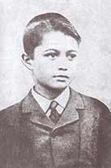
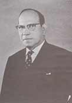
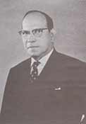
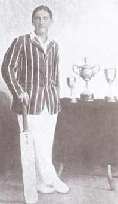
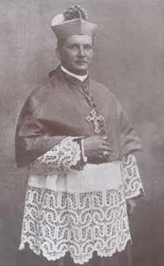
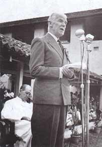

History of the College
1904 - 1954
In the year 1906, Fr. Craner was made to
relinquish the post of
Principal, which he did with a deep sense of sadness, but with a feeling of discipline
and obedience, as his
services were needed elsewhere. He had already groomed his successor, Fr. D. Philip
Caspersz OSB who was
already a member of the teaching staff. After Fr. Caspersz assumed duties as Principal,
his brother, Fr.
James came in as Boarding Prefect. These two brothers, in a comparatively short time
changed the status of
the school, making it a College. On 20th of December 1907, the Annual Distribution of
Prizes was held for
the first time on a grand scale. The Rt. Revd. Dr. C. Pagnani OSB - Bishop of Kandy was
the Chief Guest, and
along with Fr. D.A. Pancrazi OSB, he distributed 100 prizes amongst a total student
population of 275. The
ceremony was held in what was called the "Big College Hall" measuring 100' x 27'. The
programme opened with
a rendering of the chorus 'Over the Hill' by the College Choir and ended with chanting
of the 'Papal Hymn'
and National Anthem. 'Electricity & Magnetism' was introduced as a subject of the
'Cambridge Classes' in
this year.
Along with Fr. Van Langenberg who was prefect of games, Fr. Philip would spend
most evenings
encouraging and cheering on his students on the playing field at Barrack Square. The
'Cricket, Hockey &
Football Club' (CH&FC) was formed to promote sports at College. St. Anthony's became
the first College
to play Hockey, in the year 1907. 17 matches were played with 10 of them won, 4 lost and
3 drawn. Amongst
the opposition teams were the likes of Indian Rajput Regiment, Colombo Municipality and
Bloomfield. Two
Football matches were played, winning one and drawing one and five Cricket matches were
played winning four
and drawing one. The first 'Trinity-Antonian' cricket encounter was played in that same
year, with the
Antonians emerging winners by 14 runs. The irony of it all was that we lost the use of
Barrack Square in
that year, when debarred by the Military authorities. However, in 1908 the Kandy
Municipal Council granted
exclusive use of the Reclamation Grounds for College sports.
The roll of students increased to 300 in 1908. Two pupils secured passes in Senior
Division and five in
Junior Division 'Cambridge' exams. 'Physiology & Hygiene' was introduced as a
subject of the 'Cambridge
Classes'. Athletics began to feature prominently in the sports arena, with two Antonian
students; D. Vincent
Silva and P.M. John, securing first places in the highest class of the Flat Race and the
High Jump
respectively, in the annual 'Empire Day' celebrations held in Kandy on the 2nd of May
1908. The College
Sports meet was held on 4th December 1908 with a list of events described as follows ;
Flat Races, Putting
the Shot, Throwing the Cricket Ball, Kicking the Football, Long Jump, Three-legged Race,
High Jump, Hockey
Dribbling, Egg & Spoon Race, Hurdle Race, Bun-Eating Competition, Quarter Mile Race,
Chattie Race,
Obstacle Race, Zoo Race and a Thread & Needle Race for Old Boys.
The first ever College publication was released as "St. Anthony's Manual", in 1908,
featuring 53 pages of
articles and comprehensive reports on all activities of the college. The old red
building near the Bishop's
Palace was soon replaced by new buildings that came up in quick succession in the area
of the coffee store
and the old cemetery.
The year 1909, ended in sadness for the whole school and most of Kandy, when College was
robbed of one of
its most promising pupils; the little 12-year-old Charlie Hamilton, who had represented
the College First XI
Teams in Cricket, Football and Hockey with some heroic performances in that year, before
his untimely death
on 5th of November. The newly equipped Physical Laboratory was specially dedicated
to the memory of
little Charlie Hamilton.
In 1910, Fr. Basil Hyde OSB, an old boy of the college who was a member of the staff, at
the request of
several old boys summoned a meeting on 26th of December 1910 at the College Hall,
where the 'First
Annual General Meeting' of 'St. Anthony's Old Boys' Association' was held.Very Rev. Fr.
Bede Beeckmeyer was
elected the first President of the Association proposed by Fr. Hyde himself. In 1912,
when Fr. Beeckmeyer
was consecrated 'Bishop', Fr. Basil Hyde succeeded him as President of the O.B.A. A
total of 152 members had
joined the association in its first two years. The first Branch of the O.B.A. was formed
on 24thFebruary
1912 as the 'Uva Branch', with Rev. Fr. D.M.Craner OSB elected as President, at a
meeting held at St.
Mary's, Badulla.
In 1911, St. Anthony's College played its first inter-collegiate Football match, beating
Kingswood College
by two goals to nil. Boxing was introduced to St. Anthony's around 1914, at the same
time that Royal,
Wesley, Trinity and St. Thomas' took to the sport. The first ever Boxing Tournament in
the Island was
conducted in 1914, for the 'Stubbs Shield', and St. Anthony's was amongst the teams that
participated.
Due to ill health, Fr. Philip Caspersz, who had been Principal for nearly a decade, was
shifted to hibernate
within the monastic walls of reclusion, and a younger man in the person of Fr. Basil
Hyde, served as
Principal during 1915, until a more permanent appointment was made.
In November 1915, at the close of Fr. Basil Hyde's temporary tenure of office, Fr. James
Caspersz OSB, whose
association with the college began as Art Master before his ordination in 1906, was
appointed Principal. He
immediately engaged in the expansion of the College by meeting the long felt need for
better and spacious
accommodation. In October 1916 a new wing of the College was declared open by Mr.
E.B.Denham, Director of
Education, thus providing adequate laboratory facilities In November 1915, at the close of Fr. Basil Hyde's temporary tenure of office, Fr. James
Caspersz OSB, whose
association with the college began as Art Master before his ordination in 1906, was
appointed Principal. He
immediately engaged in the expansion of the College by meeting the long felt need for
better and spacious
accommodation. In October 1916 a new wing of the College was declared open by Mr.
E.B.Denham, Director of
Education, thus providing adequate laboratory facilities for Chemistry and Physics. In
1917, the Department
of Education officially recognized St. Anthony's College as a 'Fully Organized Secondary
School'. An Infants
Department for children aged 3-6 years was inaugurated.The 'Prize Giving
Day' was held on
15th December 1917, after a lapse of three years due the 1st world war, with the
Honourable Chief Justice
Sir Alex Wood Renton, presiding. Mr. William Gopallawa, the last Governor General of
Ceylon and first
President of Sri Lanka, was among the students who successfully completed the London
Matriculation
Examination during this year. The first telephone was installed in College during that
year.
In November 1915, at the close of Fr. Basil Hyde's temporary tenure of office, Fr. James
Caspersz OSB, whose
association with the college began as Art Master before his ordination in 1906, was
appointed Principal. He
immediately engaged in the expansion of the College by meeting the long felt need for
better and spacious
accommodation. In October 1916 a new wing of the College was declared open by Mr.
E.B.Denham, Director of
Education, thus providing adequate laboratory facilities for Chemistry and Physics. In
1917, the Department
of Education officially recognized St. Anthony's College as a 'Fully Organized Secondary
School'. An Infants
Department for children aged 3-6 years was inaugurated.The 'Prize Giving
Day' was held on
15th December 1917, after a lapse of three years due the 1st world war, with the
Honourable Chief Justice
Sir Alex Wood Renton, presiding. Mr. William Gopallawa, the last Governor General of
Ceylon and first
President of Sri Lanka, was among the students who successfully completed the London
Matriculation
Examination during this year. The first telephone was installed in College during that
year.
The highlight of his term of office was the College's performance in the field of sport.
Being a
stouthearted sportsman himself, he chose to infuse in his lads the truest type of
sporting spirit viz; Win
or Lose it's how you play the game that matters. Consequently, in Boxing (the straight
lefts), Cricket (the
record breaking Jack Anderson) and Cadetting (the De Soysa Cup), the College achieved
success and
recognition.

However, for all the achievements of this era, the one that has stood the time-of-test
is the individual
score of 291 runs by the legendary Jack Anderson, in a match against St. Thomas' College
Mount Lavinia,
played at Colombo in 1918. This remains to date the highest individual score in school
cricket. He also
scored five centuries in five successive matches and was the first to score a century at
what is now the
International Cricket Stadium at Asgiriya, besides also being the first to score a
century against St.
Thomas'. In Boxing, St. Anthony's who were runners-up in the much coveted Stubbs' Shield
Competition on two
previous occasions, won the trophy for the first time in 1918.Thanks to the likes of
Robert Wright, L.V.
Jayaweera, N.H. Keerthiratne and the many other Boxers produced during this era, the
Antonians remained a
formidable force through the 1920's. Though Cadetting had been introduced to St.
Anthony's in 1912, it was
not until 1916/1917 that our Cadets were able to make an impression at the annual
Inter-School Cadet
Competitions in Colombo, for the handsome 'De Soysa Cup'.
In May 1921, Fr. D. Lawrence Hyde OSB succeeded Fr. James Caspersz as Principal of St.
Anthony's, and his
administration reflected the energizing spirit of his strong personality, to open new
vistas in the history
of the College. By this time the premises next to the Cathedral had been fully developed
with the student
population topping one thousand. Several representations were made for the transfer of
St. Anthony's from
the cramped precincts to more spacious grounds, but to no avail. Finally, it was in 1927
that Bishop Bede
Beeckmeyer, an old Antonian himself, purchased the old 'Dunuwille Walauwa', the present
premises. The site
was eminently suitable and the beauty of the surrounding scenery certainly enhanced it.
The river, all along
one side of the site, views of Hunnasgiriya and Hantane on two sides and wide stretches
of smiling open
country on all sides.
The plague hit Kandy by the end of 1927 and Fr. Hyde obtained the Bishop's permission to
shift at least the
junior boarders out of Kandy to Katugastota. The renovating and reconditioning of the
new premises thus
began in November 1927. A mass of kitchens and stables had to be turned into
dormitories, dining halls and
common rooms. With drains all around, outer walls had to be bound to the grounds, the
inner walls removed
and replaced by pillars and the roof supported by trusses - a combined feat of
engineering no modern
engineer would attempt. Thanks to Bro. Lysons and the lab-boy William, water service was
installed and Titus
lamps provided the lighting. The classes were housed in a shed made of coconut pillars,
mango rafters,
corrugated iron roof and wattle-and-daub dwarf walls
On 16th January 1928, the junior boarders were installed at Katugastota with a solemn
planting of trees to
commemorate the event. The verandah of the old walauwa served as a chapel. Odds and ends
served as an altar
until one was made on 29th January and the place was consecrated to the sacred heart of
Jesus. Fr. Principal
himself occupied a room between the kindergarten and the study hall.
Fr. Lawrence Hyde built a formidable team of pioneers - Mr. P.B.A.Weerakoon, Bro.
Columban Macky, Bro.
Joseph, Bro. Lysons and Bro. Timothy - to set about his vision of transformation that
today seems
unbelievable. Fr. D.D. Barsenbach OSB who was appointed Director of Boarders in 1937
complemented this team.
Classes were started for the boarders and others who cared to come over.
Two lads came all the way past the Kandy school to be in the temporary classes and to
share in the spirit of
the new St. Anthony's College, which was rising phoenix-like out of the ashes of the
old. During the first
few years the school held classes for Kindergarten up to Cambridge Junior, with an
approximate staff of
around twelve, gradually increasing the range to the London Matriculation and an
Inter-Arts form.
In 1929, Fr. Hyde had the first permanent set of open classrooms erected alongside the
river, which today
houses the primary school. It was here, that in 1934, St. Anthony's obtained the best
results in the British
Empire with 100% passes in the London Matriculation Examination. Twelve candidates were
presented for the
Examination and all passed. Healthy rivalry was enjoyed by the Katugastota boys with
their counterparts from
the Kandy school in the matter of success at the Examinations, and more often than not,
the Kandy youngsters
had to congratulate the Katugastota lads on their performance.
Even in the field of sports, the lads of Katugastota had the better of their counterparts from Kandy in cricket and athletics, first in the under 16 division and later in the 1st Division. From 1936 - 1938, more than half the 1st XI cricket team were from the Katugastota school. The boys from Katugastota belonged in those days to the Maroon House while those at Kandy were in the Light and Dark Blue Houses.
The first playing field at Katugastota was the narrow strip of ground near the entrance on which the present Centenary Hall stands. The old Walauwa too is no more. It lies buried under the earth of the present playground. The land around the old Walauwa was thick with cocoa and coconut trees, where cobras roamed. The boys themselves helped in mopping out operations and the planning and clearing of these areas for vegetable cultivation.
In 1935, Fr. Hyde completed the main building block of the school and its counterpart running parallel to it. They stand tall to this day to his credit. The hostellers, who had by then increased to about 150, had their dormitories upstairs in the main block while the Office; Hall, Library and Chapel were on the ground floor. The smaller section behind which then consisted of a single storey, contained dining rooms and some classrooms. The playing field too was gradually expanded to its present size, thanks to Fr. Van Reyk's share in it. Fr. Robert Perera had the first Pavilion built at this time.
On the 1st of November 1941, the Kandy branch was officially separated from St. Anthony's College, now well established at Katugastota, and a new school under the name of 'St. Sylvester's College' was established with Fr. Robert Perera OSB as the first Principal.
During his record tenure of 23 years (1921 - 1943) as Principal of St. Anthony's, Fr. Lawrence Hyde achieved spectacular triumphs in the academic field as well as in sports. On the eve of his career as Principal, World War II brought a dark period through the military occupation of the College. Throughout it all, Fr. Hyde's spirit animated the skeleton that survived for four years in private houses and cadjan sheds into which she moved through compulsion. The total student population shrank to about 300 of which about 50 were boarders. Of all its Principals of the past, St. Anthony's must be proud of Fr. Lawrence Hyde OSB; not only as it's architect, but also for guiding with a sure hand it's destinies through a period of 23 years of stress, strain and turmoil. His tenure as Principal remains the longest, to date.
 In 1944, Fr. Angelo Rosati became Principal, being nominated by Fr. Hyde to carry on the task he had begun in a manner that would raise the prestige of the College as an educational institution of high standards and also restore the reputation for sports, which had been sidelined for four years during military occupation of the College. When the release of the buildings and the playing field came around 1946, one of the first innovations conceived by Fr. Theophane Wickramaratne, who led the triumphal return of the boys to the premises, was the adoption of a cottage system for hostel accommodation. Fr. Theophane was also either instrumental or involved in the construction of many other College buildings such as "The Rainbow Cottages", The Tuck Shop", " The Chapel", "Mansion"' "Villa", "Infirmary", and "The Refectory". Living in small groups, in separate cottages had not only provided a homely atmosphere but also promoted greater fellowship and understanding. Fr. Rosati immediately reconditioned several military huts into cosy, comfortable living quarters for the boarders and appointed school matrons to be in charge of the physical cleanliness of the boys and the sanitary features of each hostel block. This change had been so effectual in the achievement of greater performance both in work and play and led to a remarkable reduction of illness among the boarders.
During his sojourn on the Continent, England and the USA, Fr. Rosati was able to send sufficient apparatus to equip fully the Physics, Chemistry and Biology laboratories as well as the Geography room, raising the educational standards of the College on par with other leading schools of the Island. The student population grew to a near 1,600 with a teaching staff of 70, during this period. Classes were conducted in English, Sinhala and Tamil mediums for all subjects from Grade 1 to University Entrance.